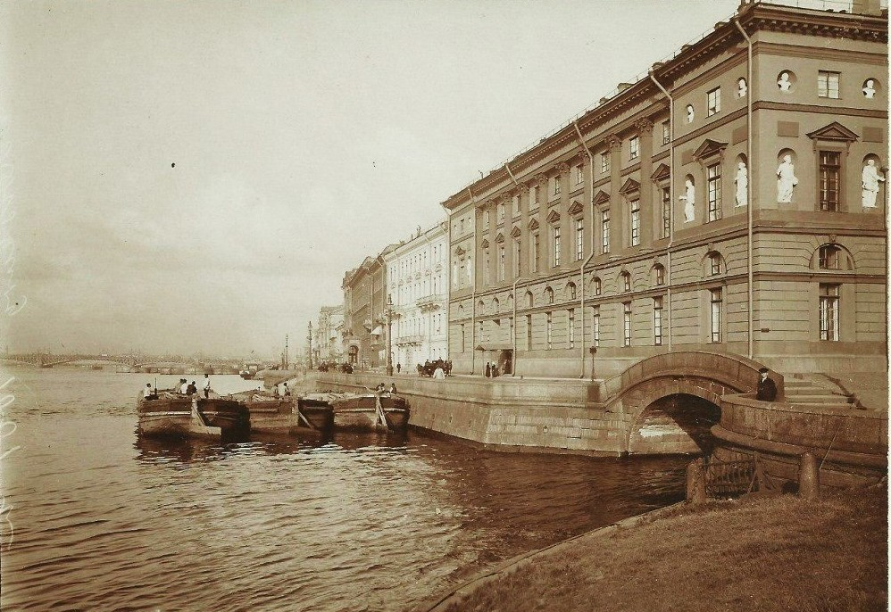
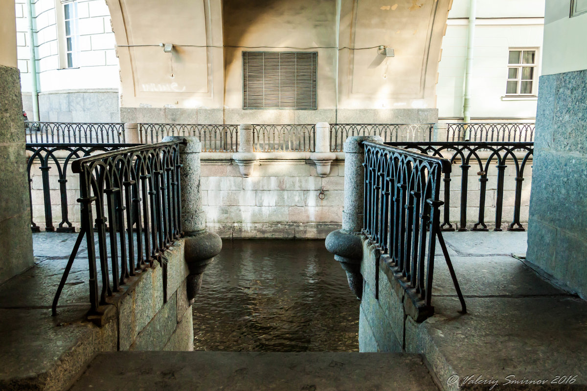
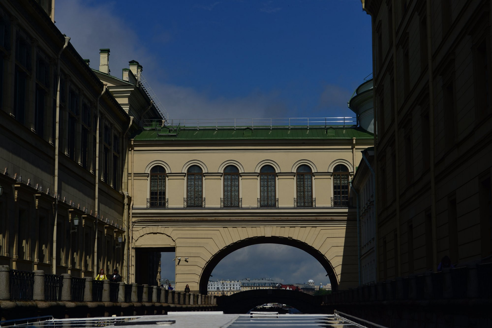

Мостик Лизы

Легенда
Этот небольшой мост через Зимнюю канавку получил народное прозвище «Мостик Лизы». Именно с него в опере П. И. Чайковского «Пиковая дама» бросилась в воду несчастная Лиза, не выдержав предательства Германа.

В повести Пушкина такого эпизода нет, там Лиза остаётся жива и выходит замуж. Но композитор узнал о реальной трагедии: некая Юлия Перова покончила с собой здесь же из-за несчастной любви. Чайковский включил эту историю в либретто, и с тех пор мост обрёл дурную и одновременно романтическую славу.

Говорят, в безлунные ночи на мосту можно увидеть печальную фигуру девушки в белом платье. Она молча стоит, глядя в тёмную воду, а на парапете лежат монеты (плата за переправу в иной мир). Самым мистическим местом считается спуск к воде у Эрмитажного мостика: именно туда, по легенде, иногда приходит дух самого Санкт-Петербурга, чтобы посидеть на ступенях.
При этом мост стал местом паломничества влюблённых. Существует поверье: чтобы безответная любовь стала взаимной, нужно прийти на Эрмитажный мост, думать о любимом человеке и бросить в канавку несколько монет. Лиза, знающая толк в страданиях по несчастной любви, обязательно поможет.
Что было на самом деле
Эрмитажный мост — один из старейших каменных мостов Петербурга. Он был перестроен в граните в 1763-1766 годах (первоначально здесь существовал деревянный подъёмный мост). Своё название получил из-за близости к зданию Нового Эрмитажа.
Что касается легенды, в опере Чайковского «Пиковая дама» (1890) действительно есть сцена самоубийства Лизы, но в либретто не указано конкретное место. Связь с Эрмитажным мостом — скорее более поздняя городская традиция, подкреплённая постановками, где декорации моста делают именно с этого вида. История о Юлии Перовой документально не подтверждена. Несмотря на это, мост действительно пользуется популярностью у молодожёнов и влюблённых, а традиция бросать монетки на счастье в любви — даже современный городской обряд, поддерживаемый экскурсоводами и туристическими блогами.
← Назад к карте